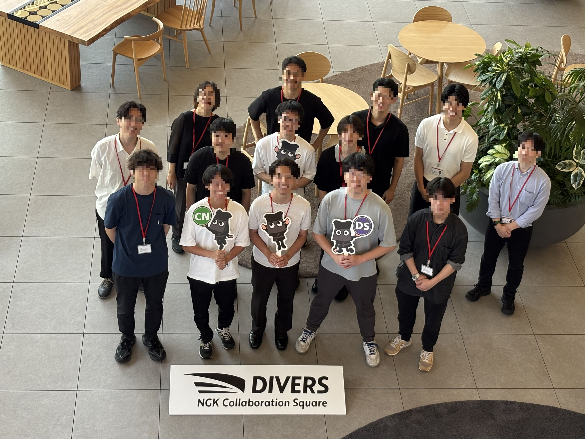
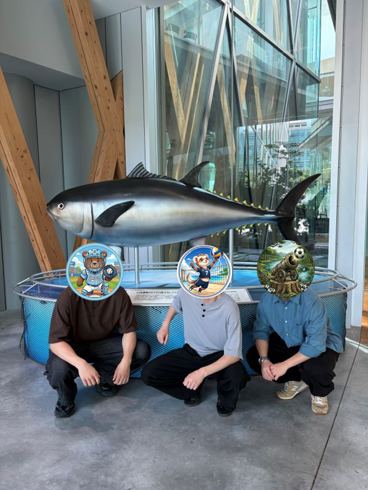
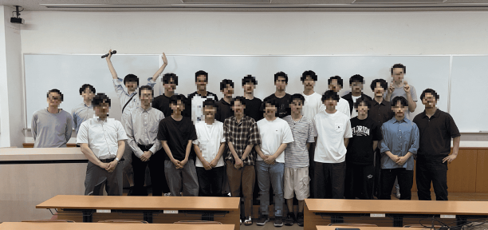

News
お知らせ・ニュース
2026.07.03
実習
NGK 見学
NGK DIVERS 施設見学を行いました！

2026.07.02
実習
原子炉実習＠近畿大学
B4の３名（荒木、今井、出川）が近畿大学で行われた原子炉実習に参加しました。

2026.06.24
学会
合同研究会
富田・黒澤研究室と合同で研究会を行いました。

2026.06.24
論文
新着論文（藤原特任助教・BNL共同研究）
藤原特任助教が BNL との共同研究で実施した、p(7Li,n)7Be 反応のベンチマーク実験に関する論文が JINST 誌で公刊されました。
2026.05.27
論文
新着論文（西谷特任教授・QST との共同研究）
西谷特任教授が QST との共同研究で実施した、JT-60SAの初期実験においてFission Chamberで測定した光中性子の論文が Nuclear Fusion 誌で公刊されました。
2026.05.22
学会
学会発表 (吉橋教授) @ BNCT International Meeting at KUMATORI
吉橋教授がBNCT International Meeting at KUMATORIでNUANSの紹介と伴侶動物BNCTについて発表しました。
| 発表者 | 吉橋 幸子 教授 |
|---|---|
| 学会・会議名 | BNCT International Meeting at KUMATORI |
| 発表タイトル | NUANSの紹介と伴侶動物BNCT |
| 発表日 | 2026年5月22日 |